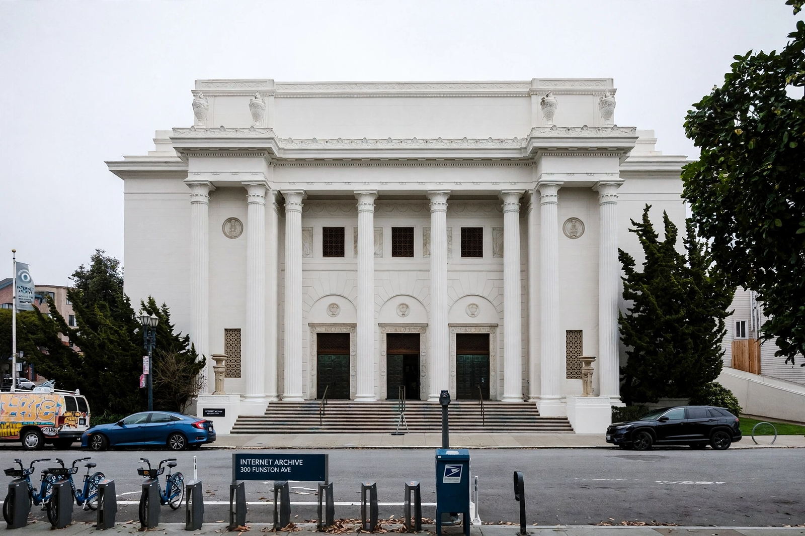

Internet Archive
| Internet Archive | |
|---|---|
| Founded | May 1996 |
| Founder | Brewster Kahle |
| Headquarters | San Francisco, California |
| Collections | Web pages, books, audio, video, software |

Photograph of the Internet Archive's headquarters, a former church with white columns in San Francisco
The Internet Archive is an American nonprofit digital library with the mission of 'universal access to all knowledge'. Founded in 1996 by Brewster Kahle, it provides free public access to collections of digitised materials, including websites, software applications, music, audiovisual recordings and millions of books.
Its best-known service is the Wayback Machine, an archive of the World Wide Web holding hundreds of billions of captured web pages. Beyond the web, the Archive scans and lends books (its Open Library project), preserves early software and games playable in the browser, and hosts vast collections of live music, public-domain film and television news recordings — used by researchers to study everything from propaganda to broadcast history.
The Archive's 'controlled digital lending' of scanned books brought it into conflict with publishers: in the 2020 Hachette v. Internet Archive case, US courts ruled against its lending of scanned print books, a major legal setback. The Archive remains, nonetheless, the closest thing the Internet has to a memory: a recognition that on a network where the average page vanishes or changes within months, preservation does not happen by itself.